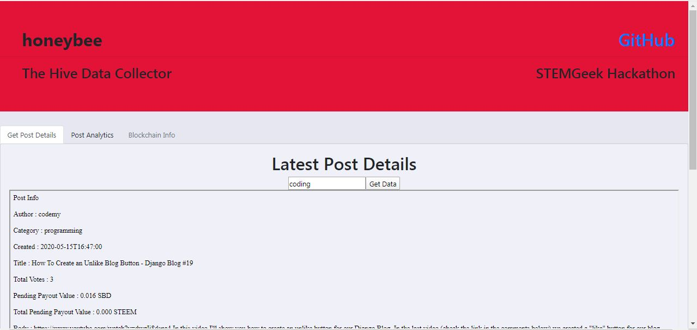
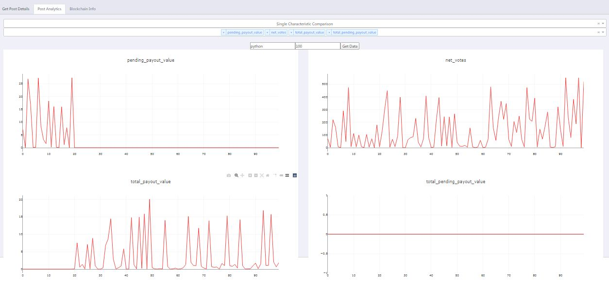

honeybee is my submission for the STEMGeek’s Hackathon.
Imagine you had access to all the data on the Hive Blog within your grasp within a few clicks and could do whatever you want with it? How would you use such a power? Would you find it useful if the patterns in the pasts posts are studied and are available to you just by entering the tag in which you want to post in?
Enter honeybee!
This honeybee collects data from the Hive just as how real honeybees collect honey to their Hives!
honeybee is a simple web-app that does data analytics on the blogs based on Hive. Although we have a lot of data visualization libraries in Python, it can be quite bothersome for the uninitiated and someone who just wants to get some analytics on how the various parameters vary with the different characteristics of the blogs we write. This information can be crucial in planning future blogs that can get more votes and thus get popular.

It is here where honeybee comes handy. As of now, the site is very rough and typical of a hackathon product. The different features of data collection and analysis are available in the different tabs. The first tab can be used to collect the information of the latest post by searching the tag of the post. This will return information such as the name of the author, the timestamp, the total pending payout value, and so on.
In the Post Analytics tab, we can select what type of analysis we want to do - namely Single Characteristic Analysis and Multiple Characteristic Analysis.

Single Characteristic Analysis plots the variations of a single type of data of up to the latest 100 posts of a certain tag. You can choose up to 4 different characteristics to plot at the same time.
Multiple Characteristic Analysis, on the other hand, plots the relationship between the different characteristics to gain insights like how is the number of votes varying with the total number of words in the blog or how the curator rewards varying with the payout value and so on, for the last 100 posts, say.
Right now the app is just like any other product built at a hackathon. But I believe it is enough to show how promising this can become for users of Hive.
For the features that can be added to improve honeybee further.
Live Site - hive-honey-bee.herokuapp.com
GitHub - honeybee
Link to post in Hive Blog
Thanks to @themarkymark for organizing the hackathon and all the sponsors. Also thanks to Kiran Johns for helping in the deployment. I had so much fun building the app and am looking forward to working on this further even if it doesn’t win the hackathon ;)